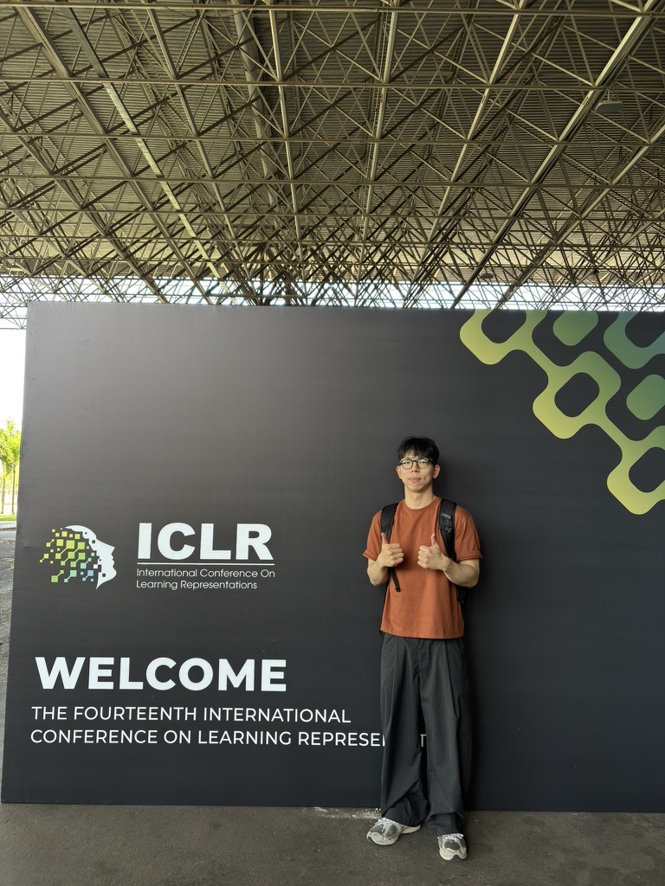

Bumjun Kim
Ph.D. Student in Artificial Intelligence
Yonsei University
Artificial Intelligence & Information Systems Laboratory (AI-ISL)
Advisor: Prof. Albert No
I am a Ph.D. student in Artificial Intelligence at Yonsei University, advised by Prof. Albert No in the Artificial Intelligence & Information Systems Laboratory.
My research focuses on understanding the mechanisms that shape the capabilities and limitations of diffusion language models and using these insights to develop more reliable and efficient generation methods.
selected publications
(*) denotes equal contribution, (†) denotes corresponding author.
-
ICMLDAPD: Dependency-Aware Parallel Decoding via Attention for Diffusion LLMsIn the International Conference on Machine Learning, 2026.
Parallel decoding for diffusion LLMs using attention-derived dependency structure.
-
ICLRRainbow Padding: Mitigating Early Termination in Instruction-Tuned Diffusion LLMsIn the International Conference on Learning Representations, 2026.
A method for reducing early termination in instruction-tuned diffusion language models.
-
CVPRFindingsMemorization In Stable Diffusion Is Unexpectedly Driven by CLIP EmbeddingsIn the IEEE/CVF Conference on Computer Vision and Pattern Recognition, 2026 Findings.
An analysis of Stable Diffusion memorization that identifies CLIP embeddings as a key driver.
-
EMNLPSame Trajectory, Contradictory Rewards (ROBORMBENCH): Paraphrase Fragility in Vision Language Reward ModelsIn the 2026 Conference on Empirical Methods in Natural Language Processing (Main Conference).
A benchmark revealing the fragility of vision-language reward models to paraphrases of identical robot trajectories.
workshop papers
-
ICML-WSingle-Step Initialization for Exploratory Parallel Rollouts in Diffusion LLMsIn the ICML Workshop on Structured Probabilistic Inference & Generative Modeling, 2026.
A single-step initialization strategy that promotes early exploration in parallel diffusion-LLM rollouts.
-
ICML-WA Theoretical Analysis of Why Masked Diffusion Models Mitigate the Reversal CurseIn the FoGen Workshop at ICML 2026.
A theoretical analysis of why masked diffusion models mitigate the reversal curse.
education
research experience
honors & awards
- Science and Technology Scholarship, Hyundai Motor Chung Mong-Koo Foundation, Sep 2022 - Feb 2025.
- Top 100 Finalist, Google Solution Challenge, May 2024. Certificate
- Encouragement Award, Biohealth Data Competition - Dentistry Track (Hongik University), Dec 2023. Certificate
- Grand Prize, Yongin City SW/AI Hackathon, Oct 2023. GitHub · Preliminary Result